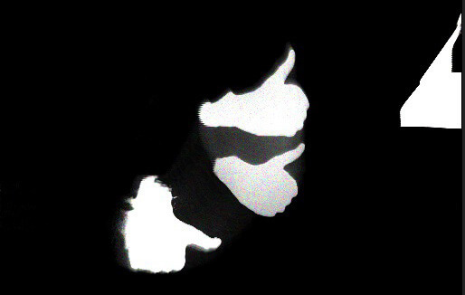
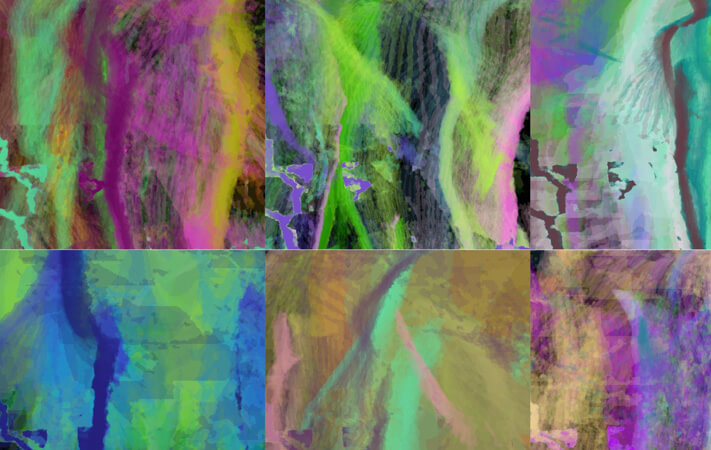
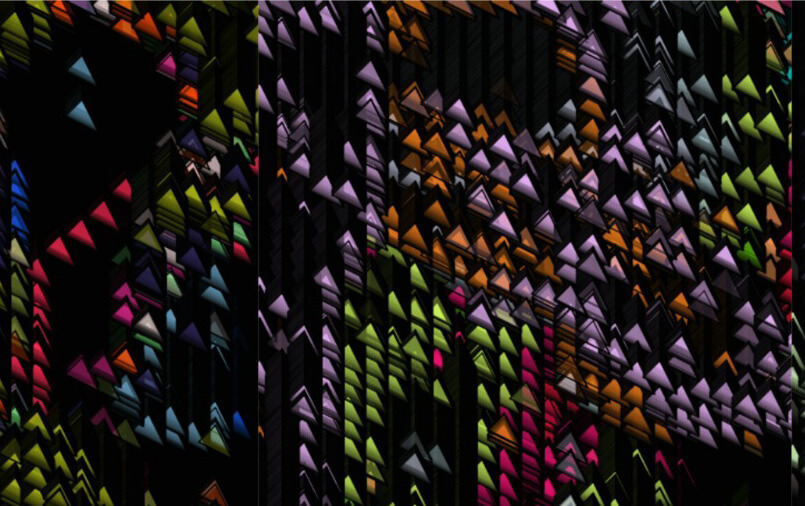

Das Projekt "Bremerhaven malt" entstand in Zusammenarbeit mit dem City Skipper e.V. />. Im Rahmen der Initiative "Wissenschaft & Shopping" sollte am 07.11.21 ein verkaufsoffener Sonntag durch eine Lichtinstallation unterstützt werden. Das Ziel war es, Menschen in die Innenstadt zu locken, um diese als attraktives Einkaufs- und Erlebnisziel zu bewerben.
Wir hatten die Idee, die Besucher in einem gemeinsamen Prozess teilnehmen zu lassen. Wir benutzten eine XBOX-Kinect, um die Besucher und ihre Bewegungen aufzuzeichnen und die Bilder durch einen Algorithmus zu abstrahieren, um ein Bild zu malen.
Dieses gemalte Einzelbild wurde periodisch abgespeichert. Die gesammelten Einzelbilder wurden im Anschluss zu einem großen gemeinsamen Gemälde zusammengesetzt. So hatte jede Besucher:in die Möglichkeit ein Teil des Prozesses zu sein und seine/ihre Kreation verewigen zu lassen.
Rohdaten der Kinect
Um das Bild zu generieren, benutzten wir die Daten aus der Infrarot-Matrix der Kinect. Die Daten der Matrix enthalten Informationen über die Distanz zum erfassten Objekt. Dadurch war es uns möglich den Bereich, den die Kinect erfasst, zu begrenzen. Da das Projekt in einer geschäftigen Einkaufsstraße stattfinden sollte, können wir so Bilder in einem isolierten Bereich erfassen und den Hintergrund unbeachtet lassen.
Unser generiertes Bild sollte sich langsam aufbauen, damit die Besucher:innen Zeit hatten, um ihr Werk zu malen. Hierbei sind wir auf die Prinzipien der Langzeitbelichtung aus der Fotografie zurückgekommen. "Aktive" Pixel sollten langsam ihre Helligkeit oder Farbe ändern, um einen graduellen Aufbau zu erwirken.
Abstraktion durch Farbe
Uns war es besonders wichtig, dass das entstandene Bild möglichst abstrakt sein sollte. Einerseits um DSGVO-Verstöße zu vermeiden, aber auch, um das Zeichnen von konkreten Symbolen oder gar Schrift nicht zu ermöglichen. Hierbei kamen wir zu einem Ansatz, bei dem die aktiven Pixel Formen zeichnen. Dies erschien uns als Lösung am besten, denn so konnten die Benutzer:innen genug Einfluss auf das Bild nehmen, um es zu ihrem eigenen zu machen, ohne, dass das Zeichnen von Symbolen oder Schrift möglich war.
Abstraktion durch Form
Entstandene Roh-Bilder
Die aufgezeichneten Roh-Bilder haben wir im Anschluss zu einem Gesamtgemälde zusammengesetzt. Es ist das Ergebnis aller Bilder, die an diesem Tag von den Besuchern bewusst oder auch unbewusst im Vorbeigehen gezeichnet wurden. Zusammen zeigt das Bild den Bremerhavener Sonnenuntergang.
Reaktionen der Presse auf Bremerhaven malt: